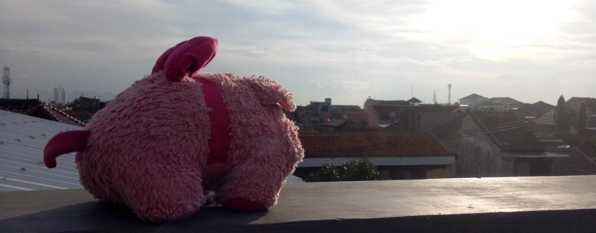

Boneka Oisu
"Boneka Oisu atau lebih dikenal dengan nama Oisu Labisa Pasu merupakan boneka babi yang sangat imut. This plushie is a toy made from cloth and filled with a soft material so that it is pleasant to hold. Dengan ukuran sekitar 20 cm, Oisu dapat dengan mudah dibawa bepergian! Nothing could not be achieved, when even pigs could fly!"


Oisu's Buddies
Moment
Sunset
Memandang matahari jauh disana. Tidak hanya oisu bisa menjadi boneka mainan bagi anak-anak, oisu juga dapat menjadi teman senja untuk berbincang ringan dan menyeruput kopi hitam yang nikmat (tentu bukan Oisu yang meminum kopi) xixi.